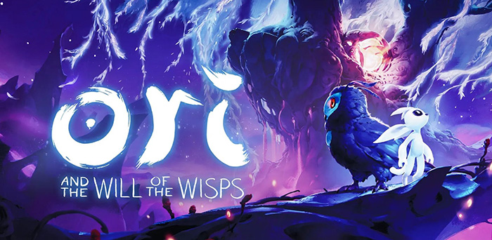

类银河战士恶魔城游戏（英语：Metroidvania game，简称“银河恶魔城”或“银河城”），是动作冒险游戏的一个子分类，指玩法类似于银河战士系列和部分恶魔城系列（特别是《恶魔城X 月下夜想曲》及之后发布于任天堂掌机平台的系列）的游戏。银河恶魔城游戏中通常有可供玩家探索的大型相连世界地图，但是进入地图某处的特定地点往往会有门或其他障碍物限制玩家，只有当玩家在游戏中获得特殊道具、工具、武器或能力后才能通过。这些新的提升还能帮助玩家击败更高难度的敌人并找到捷径和秘密区域，包括经常回顾已经探索过的地图区域。银河恶魔城游戏通过这样的设计使故事和关卡设计整合得更紧密，以精心设计的关卡和角色控制来鼓励玩家探索和实验，使之更投入自己的角色。